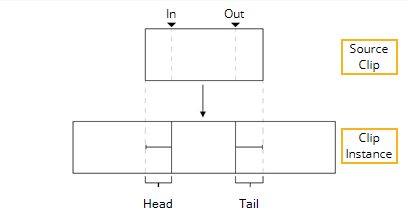
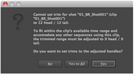

软修剪将剪辑实例上的句柄限制为预定义的量，模拟源剪辑上的入点和出点，允许您在剪辑实例上使用其他时间轴工具，如 滑夹 和 幻灯片剪辑 .
要在剪辑实例上设置软修剪，请执行以下操作:
| 1。 | 在时间轴上选择剪辑实例。 |
| 2. | 右键单击并选择 剪辑 > 设置软装饰 . |
的 设置软装饰 对话框显示。
| 3. | 设置要添加到每个剪辑实例的头部和尾部的帧数: |

• 使用全可用范围 -将控制柄设置为源剪辑帧范围的全部范围。
• 使用框架 -将指定数量的帧添加到剪辑实例的头部和尾部。
| 4. | 单击 好 添加指定数量的句柄。 |
如果请求的手柄不在可用帧范围内，将显示一个警告对话框，其中包含每个选定剪辑实例的适当更正。

单击 是 接受，或 没有 中止操作。
注意: 在多个序列中使用剪辑实例时，单击 是对所有人 在所有情况下接受更正。
|
|